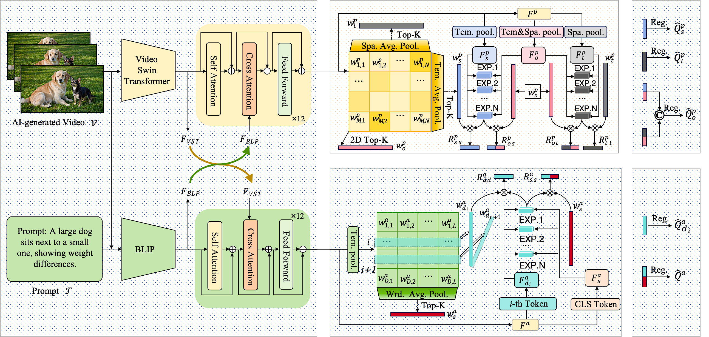
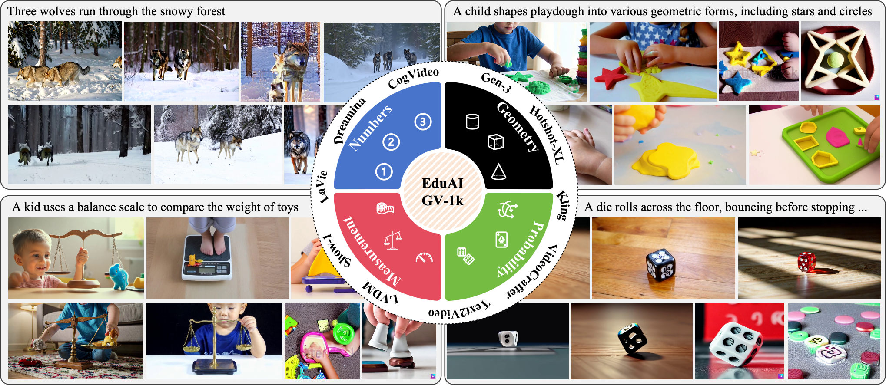
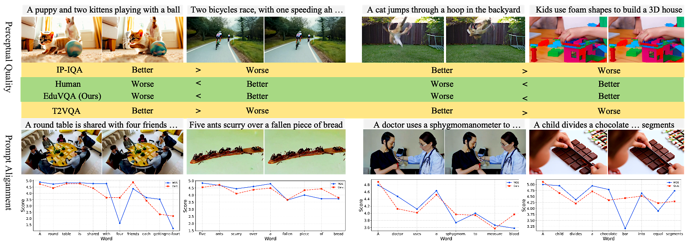
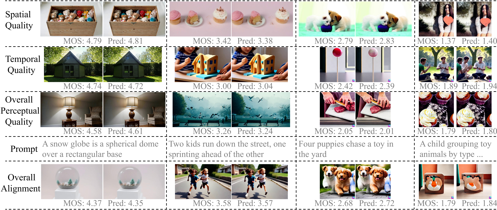
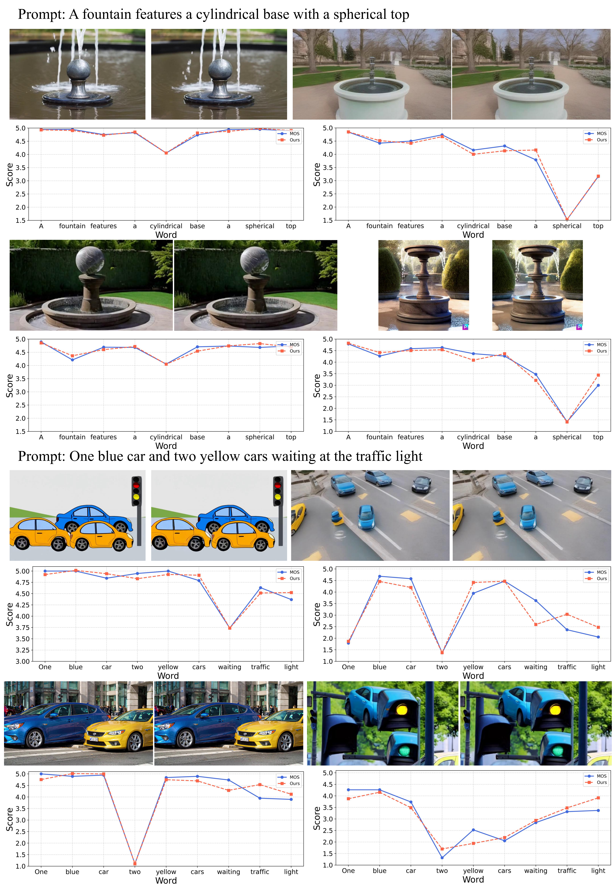

EduVQA
📄 Abstract
Existing AI-generated video quality assessment (AIGVQA) methods mainly focus on global perceptual realism and coarse text-video alignment, while overlooking a critical requirement in educational scenarios: concept correctness. In early mathematics education, subtle errors in numerical quantities, geometric relations, or spatial configurations may fundamentally alter the conveyed knowledge despite visually plausible generation.
To address this problem, we introduce EduAVQABench, the first benchmark for concept-aware educational AIGV assessment, containing 1,130 videos generated by ten state-of-the-art T2V models together with over 310,650 fine-grained human annotations spanning perceptual quality and semantic alignment.
Built upon this benchmark, we further propose EduVQA, a concept-aware AIGVQA framework equipped with a Structured 2D Mixture-of-Experts (S2D-MoE) architecture. By jointly modeling fine-grained concept assessment and overall quality prediction through shared experts and adaptive two-dimensional routing, EduVQA effectively captures subtle concept-level inconsistencies overlooked by conventional global scoring methods.
Extensive experiments demonstrate that EduVQA consistently outperforms existing AIGVQA approaches across both perceptual and semantic evaluation tasks while exhibiting strong generalization capability on unseen benchmarks.
🧠 EduVQA Framework

Key Features
- Concept-aware quality modeling
- Shared expert representation learning
- Adaptive two-dimensional expert routing
- Joint perceptual and semantic assessment
- Strong cross-benchmark generalization
📊 EduAIGVBench
Benchmark Statistics
- 1,130 AI-generated videos
- 10 state-of-the-art T2V models
- 310,650 human annotations
- Fine-grained perceptual and semantic labels
- Early mathematics education scenarios
Dataset Overview

Representative Dataset Samples

Human Annotation and Quality Levels

🔬 Qualitative Analysis
Cross-Model Comparison

MOS Prediction Analysis

Word-Level Semantic Alignment

gMAD Comparison

📈 Experimental Results
🔹 Quantitative Results on EduAIGVBench
🧪 Perceptual Quality
| Setting | Method | SRCC ↑ | PLCC ↑ | KRCC ↑ | RMSE ↓ |
|---|---|---|---|---|---|
| Zero-shot | ImageReward | 0.409 | 0.432 | 0.282 | 3.369 |
| Zero-shot | Q-Align | 0.644 | 0.669 | - | - |
| Fine-tuned | IPCE | 0.822 | 0.822 | 0.631 | 0.494 |
| Fine-tuned | IP-IQA | 0.852 | 0.863 | 0.666 | 0.434 |
| Fine-tuned | DOVER | 0.832 | 0.840 | 0.645 | 0.479 |
| Fine-tuned | BVQA | 0.848 | 0.862 | - | - |
| Fine-tuned | CLIPVQA | 0.846 | 0.832 | - | - |
| Fine-tuned | FasterVQA | 0.844 | 0.856 | 0.659 | 0.456 |
| Fine-tuned | GSTVQA | 0.837 | 0.849 | 0.655 | 0.456 |
| Fine-tuned | VSFA | 0.803 | 0.805 | 0.611 | 0.515 |
| Fine-tuned | SimpleVQA | 0.742 | 0.758 | 0.552 | 0.553 |
| Fine-tuned | T2VQA | 0.810 | 0.826 | 0.623 | 0.499 |
| Ours | EduVQA | 0.869 | 0.879 | 0.688 | 0.417 |
🧪 Prompt Alignment
| Setting | Method | SRCC ↑ | PLCC ↑ | KRCC ↑ | RMSE ↓ |
|---|---|---|---|---|---|
| Zero-shot | CLIP | 0.270 | 0.282 | 0.184 | 3.174 |
| Zero-shot | ImageReward | 0.409 | 0.432 | 0.282 | 3.369 |
| Zero-shot | BLIP | 0.457 | 0.392 | 0.317 | 101.113 |
| Zero-shot | Open-VCLIP | 0.335 | 0.229 | 0.340 | 94.306 |
| Fine-tuned | IPCE | 0.634 | 0.643 | 0.460 | 0.604 |
| Fine-tuned | IP-IQA | 0.648 | 0.653 | 0.469 | 0.593 |
| Fine-tuned | T2VQA | 0.731 | 0.733 | 0.544 | 0.564 |
| Ours | EduVQA | 0.757 | 0.768 | 0.571 | 0.527 |
🔹 Cross-dataset Performance Comparison
All models are trained on EduAIGV-1k and evaluated on two benchmarks.
🧪 LGVQ Dataset
| Method | Spatial (SRCC/PLCC) | Temporal (SRCC/PLCC) | Alignment (SRCC/PLCC) |
|---|---|---|---|
| BVQA | 0.518 / 0.608 | 0.235 / 0.550 | -- / -- |
| CLIPVQA | 0.509 / 0.480 | 0.355 / 0.287 | -- / -- |
| FasterVQA | 0.511 / 0.539 | 0.380 / 0.427 | -- / -- |
| GSTVQA | 0.507 / 0.555 | 0.459 / 0.529 | -- / -- |
| VSFA | 0.498 / 0.516 | 0.174 / 0.246 | -- / -- |
| SimpleVQA | 0.395 / 0.442 | 0.262 /
📧 ContactBaoliang Chen: blchen6-c@my.cityu.edu.hk Xinlong Bu: 2024023476@m.scnu.edu.cn Zhanjie Yu: zhanjieyu@scnu.edu.cn 📚 Citation |